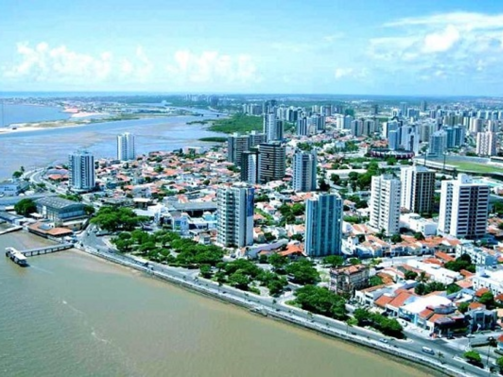

O Piauí possui litoral pequeno, mas rico em biodiversidade e turismo ecológico. Teresina é a única capital nordestina localizada fora do litoral. O Parque Nacional da Serra da Capivara reúne importantes sítios arqueológicos. A economia depende da agropecuária, agricultura e produção de energia. O clima predominante é semiárido no interior e tropical em outras áreas. A culinária típica inclui pratos como paçoca, carne de sol e capote.

Voltar